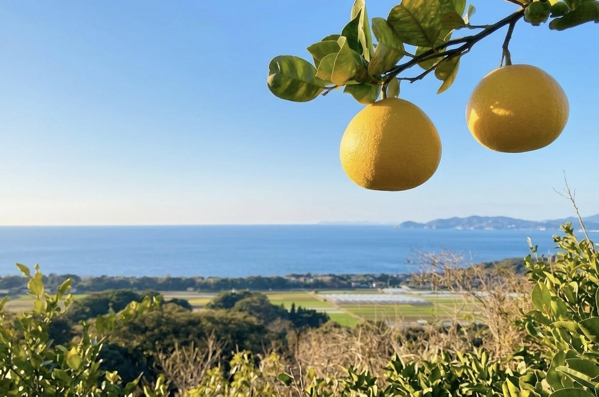

レタス
ふさふさの頭は、苓北町で育つレタス。町のおいしい恵みをのせているんだ！
苓北町キャラクターれいほくちゃん
ようこそ、熊本・天草の苓北町へ。
やさしい海、みずみずしい恵み。そして、ちょっと特別なイルカ。苓北町の魅力を、れいほくちゃんと一緒に見つけにいこう！
こんにちは！苓北から来たばい！
熊本県苓北町からやってきた、レタスと緋扇貝がのったイルカです。海と自然と、おいしいものがいっぱいの町。その魅力を、みんなに届けるばい！
実はまだ仮のお名前。気軽に呼んでね！
ふさふさの頭は、苓北町で育つレタス。町のおいしい恵みをのせているんだ！
レタスのとなりには、きれいな色の貝殻。苓北の海の魅力も、いっしょに届けるよ！
ほっぺには、苓北のおいしいみかんも！海の幸も、畑の恵みも、ボクの自慢だよ。
ボクは、海を泳ぐイルカ！ひれと尾びれを動かして、苓北の海からみんなに会いにいくよ。
気になるボタンを押してみてね！
海からのやさしい風と、たっぷりの太陽。温暖な気候に恵まれた苓北町では、みかんや晩柑などの柑橘が育ちます。町の景色にも、おいしい実りがいっぱい。

横にめくって、お気に入りを見つけてね。
いつもの甘さ、ほっとする味。
皮をむいて、そのままぱくり。甘さとほどよい酸味を楽しむ、おなじみのみかんです。
皮をむくと、ふわっといい香り。
豊かな香りとこくのある甘さが魅力。ひと房ずつ、ゆっくり味わいたくなる柑橘です。
でこっとした頭が目印。
甘みと酸味がぎゅっとつまった、ジューシーな果肉。食べごたえも楽しめます。
さわやかさを、たっぷりと。
淡い黄色の大きな実に、みずみずしい果汁。すっきりとした風味が広がります。
紹介品種の参考：苓北町町政年報（PDF） ↗
熊本県の天草にある、海と自然に囲まれた町です。美しい海岸線、緑豊かな山、おいしい農産物や海の幸。町の魅力を、ちょっとだけ紹介するばい！
どこまでも青く続く、天草西海岸の景色。
海のすぐそばに、緑豊かな山が広がります。
温暖な気候が育てる、みずみずしい恵み。
色鮮やかな緋扇貝など、新鮮な海の幸も。